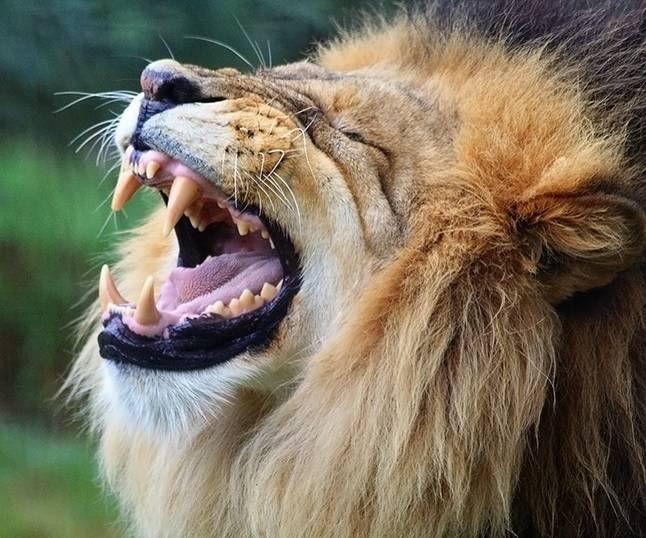
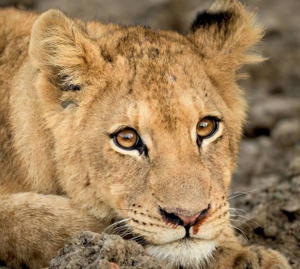

Описание льва, внешний вид, характеристика, фотографии животного
Из ныне существующих диких кошек лев уступает в габаритах лишь тигру. Взрослый самец лев весит в среднем до 250 кг при длине туловища 2,5 м. Гибкое, подвижное тело льва обладает отлично развитой мускулатурой шеи и передних лап. Когти льва достигают 7 см в длине.
Массивная голова льва с вытянутой мордой наделена сильными челюстями. У льва 30 зубов, клыки размером до 8 см позволяют ему удачно охотиться на крупных животных: косуль, кабанов, зебр и антилоп.
Язык, покрытый бугорками, помогает быстро избавляться от кровососущих насекомых и ухаживать за шерстью.
На морде льва расположено несколько рядов усов с темными пятнышками у основания, образующими уникальный для каждой особи узор. Новорожденные детеныши льва пятнистые, как леопарды, но в половозрелом возрасте пятна пропадают. Цвет шерсти льва может быть песочным, коричневым или с красным отливом. Хвост оканчивается эффектной черной кисточкой.
Своеобразным отличием львов является исключительный половой диморфизм. Львы самцы по размеру гораздо крупнее самок и наделены роскошной гривой, появляющейся уже у шестимесячных львят. К трем годам ворс на гриве льва вырастает до 35-40 см. Цвет, длина и пышность зависят от генетики, ареала и количества тестостерона. Старые матерые львы имеют самую густую и лохматую гриву.
Виды и классификация львов
Классификация львов:
азиатский (персидский, индийский) лев (Panthera leo persica)
отличается приземистым телом и прилизанной, не слишком густой гривой. Вес льва составляет 150-220 кг, у самцов от 160 до 190 кг, у самок от 90 кг до 120 кг. Рост азиатского льва в холке достигает 1,05 метра. Рекордная длина льва достигала 2,92 метра. Чуть более 500 представителей этого вида львов обитает в индийском Гирском заповеднике. У самого большого азиатского льва была зафиксирована длина 2,92 метра;
берберийский лев (барбарийский) (Panthera leo leo)
самый массивный хищник с темной густой гривой. Повсеместно населял африканский континент. К сожалению, окончательно истреблен человеком в начале 20 века. Сегодня в неволе живут потомки берберийского льва, но о чистокровности вида говорить не приходится. Вес льва самца достигает 160-270 кг, вес самки составляет 100-170 кг. Это был самый крупный хищник из всех видов львов;
сенегальский (западноафриканский) лев (Panthera leo senegalensis)
Самцов отличает светлая, короткая грива (либо ее отсутствие), светлая шерсть и небольшие размеры. Прайды этого хищника меньше, а форма черепа отличается от других видов львов. Ареал обитания находится к югу от Сахары от Сенегала на западе и на востоке до Центрально Африканской республики. Около тысячи представителей обитают в саваннах Гвинеи, Нигерии и Сенегале. Этот вид львов находится под угрозой исчезновения;
Где и как живут львы?
Львы обитают на 2 материках: в Африке и Азии. Ареал распространения львов в Африке находится в южной части от пустыни Сахары. В Азии дикий лев обитает в Индии, в Гирском лесу индийского штата Гуджарат.
На самом деле во времена раннего средневековья ареал обитания львов был гораздо шире: животные обитали на всей территории Африки и Индии, на Ближнем Востоке, в Иране и даже на юге Европы и России. Но разрушение среды обитания хищников и преследование человеком привело к сокращению мест обитания льва.
В природе львы живут в саваннах, иногда в лесах или кустарниках. Хищники живут небольшими стаями — прайдами, состоящими из 5-6 родственных самок, их детенышей и 1-2 зрелых самцов (2 самца могут быть в прайде только если они братья). Молодых львов, изгнанных из прайда, ожидает жизнь одиночки, возможность вступить в другой прайд или создать собственный.
Интересные факты о львах
- Более тысячи африканских и около ста азиатских львов сегодня содержатся в неволе с целью размножения, видового сохранения и выставочных мероприятий.
- Первые упоминания о прирученных хищниках относятся к 8 веку до н.э.
- Лев — царь зверей, символ исключительной отваги, силы и мощи во многих европейских и азиатских культурах. В геральдике лев олицетворяет величие и благородство, доблесть, гордость и справедливость.